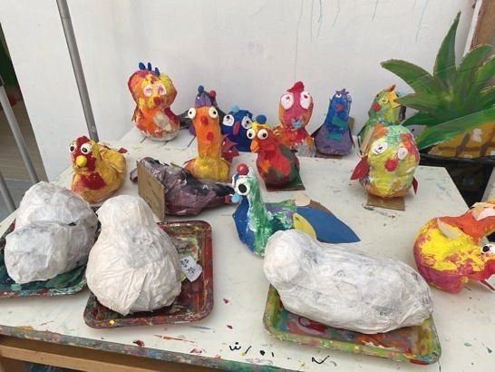
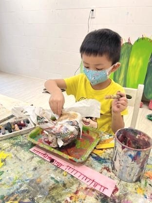
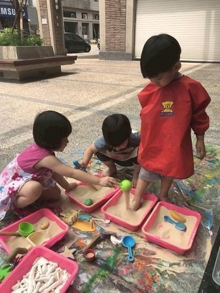
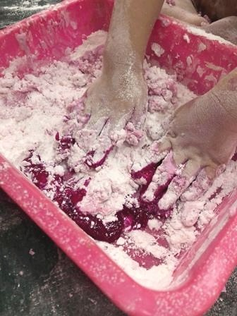
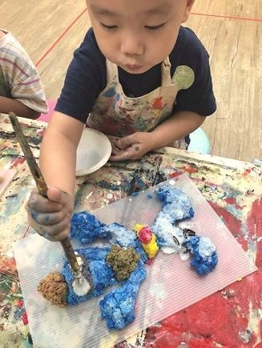

創作技法說明
使用可食材料如抹醬、麵粉、色米、糖果、果凍等進行創作 , 如顏料混合、敲打拓印、組合設計等 , 不強調成品保留 , 而是重視參與歷程。
21. 可食媒材法 ( Edible Art Pedagogy ) 用食物創作藝術 , 在限制中釋放全新感官與互動的創作方式。







使用可食材料如抹醬、麵粉、色米、糖果、果凍等進行創作 , 如顏料混合、敲打拓印、組合設計等 , 不強調成品保留 , 而是重視參與歷程。
孩子在這個方法中，不只是使用材料或學習技巧，而是在嘗試中建立自己的判斷：我看見了什麼？我想怎麼改變？我可以用什麼方式表達？這些過程會慢慢累積成孩子面對世界的感受力、思考力與創造力。